|
10ms
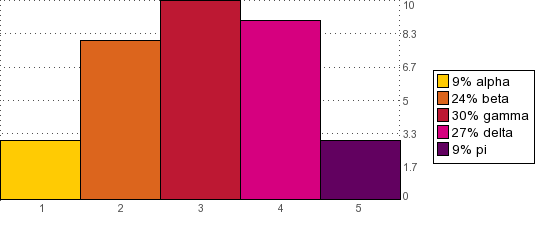
<?php
$graph = new graph();
$graph->showkey = true; //You can also set properties directly
$graph->type = "bar";
$graph->showxgrid = false;
$graph->colorlist = true;
$graph->key = array('alpha','beta','gamma','delta','pi');
$graph->benchmark = true;
$graph->keyinfo = 1;
$graph->demoData(5,1);
$graph->graph();
$graph->showGraph('images/exa18.png');
?>
|
159ms
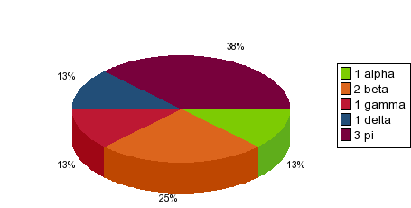
<?php
$graph = new graph();
$graph->setProp("showkey",true);
$graph->setProp("type","pie");
$graph->setProp("showgrid",false);
$graph->setProp("key",array('alpha','beta','gamma','delta','pi'));
$graph->setProp("keywidspc",-50);
$graph->setProp("benchmark",true);
$graph->setProp("keyinfo",2);
$graph->demoData(5,1,10);
$graph->graph();
$graph->showGraph('images/exa19.png');
?>
|
190ms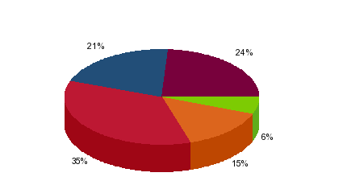
<?php
$graph = new graph()
$graph->addPoint(2);
$graph->addPoint(5);
$graph->addPoint(12);
$graph->addPoint(7);
$graph->addPoint(8);
$graph->setProp("type","pie");
$graph->setProp("showgrid",0);
$graph->graph();
$graph->showGraph("exa14.png");
?>
|
170ms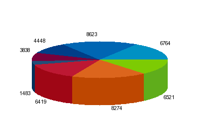
<?php
$graph = new graph();
$graph->demoData(8,1000,10000);
$graph->setProp("type","pie");
$graph->setProp("showgrid",false);
$graph->setProp("pieangle",56);
$graph->setProp("useval",true);
$graph->graph();
$graph->showGraph("exa15.png");
?>
|
19ms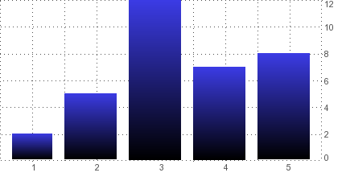
<?php
$graph = new graph();
$graph->addPoint(2);
$graph->addPoint(5);
$graph->addPoint(12);
$graph->addPoint(7);
$graph->addPoint(8);
$graph->setProp("type","bar");
$graph->setProp("barstyle",1);
$graph->setProp("barwidth",.8);
$graph->setColor("gstart",-1,"blue");
$graph->setColor("gend",-1,"black");
$graph->graph();
$graph->showGraph("exa12.png");
?>
|
14ms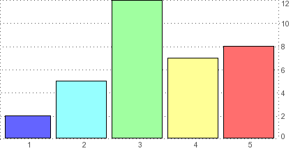
<?php
$graph = new graph();
$graph->addPoint(2);
$graph->addPoint(5);
$graph->addPoint(12);
$graph->addPoint(7);
$graph->addPoint(8);
$graph->setProp("type","bar");
$graph->setProp("showxgrid",0);
$graph->setProp("barwidth",.9);
$graph->setProp("colorlist",array(array(100,100,255),array(150,255,255),array(160,255,160),array(255,255,150),array(255,110,110)));
$graph->graph();
$graph->showGraph("exa13.png");
?>
|
23ms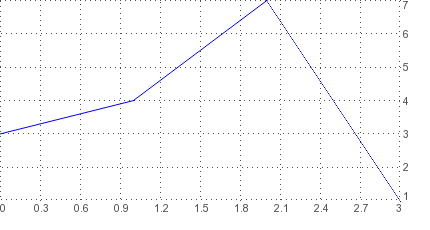
<?php
$graph = new graph();
$graph->addPoint(3);
$graph->addPoint(4);
$graph->addPoint(7);
$graph->addPoint(1);
$graph->graph();
$graph->showGraph("exa1.png");
?>
|
24ms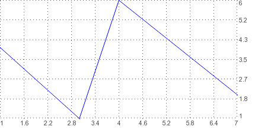
<?php
$graph = new graph();
$graph->addPoint(1,3);
$graph->addPoint(6,4);
$graph->addPoint(2,7);
$graph->addPoint(4,1);
$graph->graph();
$graph->showGraph("exa2.png");
?>
|
50ms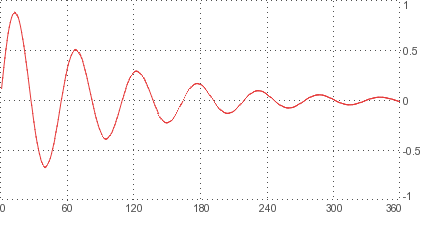
<?php
$graph = new graph();
$graph->importCSV("testdata2.csv","i,d");
$graph->setColor('color',0,'red');
$graph->setBulkProps('xsclpts:6,xincpts:6,ysclpts:4,yincpts:4');
$graph->setProp('autosize',false);
$graph->yMin = -1;
$graph->yMax = 1;
$graph->xMin = 0;
$graph->xMax = 360;
$graph->graph();
$graph->showGraph("exa3.png");
?>
|
37ms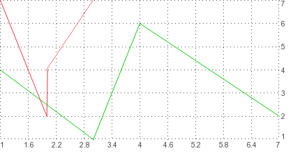
<?php
$graph = new graph();
$graph->addPoint(1,3,0);
$graph->addPoint(6,4,0);
$graph->addPoint(2,7,0);
$graph->addPoint(4,1,0);
$graph->addPoint(2,2,1);
$graph->addPoint(5,2,1);
$graph->addPoint(7,3,1);
$graph->addPoint(7,1,1);
$graph->setColor('color',0,20,200,20);
$graph->setColor('color',1,'red');
$graph->graph();
$graph->showGraph("exa4.png");
?>
|
23ms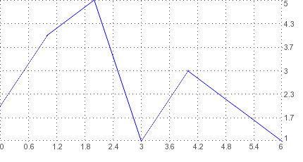
<?php
$graph = new graph();
$graph->addBulkPoints(2,4,5,1,3,2,1);
$graph->graph();
$graph->showGraph("http://www.zackbloom.org/graph/exa5.png");
?>
|
30ms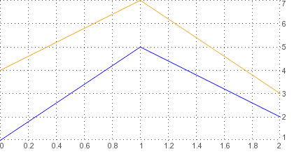
<?php
$graph = new graph();
$graph->addBulkPoints("0|1,0|5,0|2,1|4,1|7,1|3");
$graph->setColor('color',1,'orange');
$graph->graph();
$graph->showGraph("exa6.png");
?>
|
25ms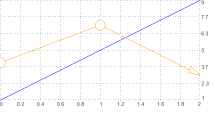
<?php
$graph = new graph();
$graph->addBulkPoints("0|1,0|5,0|2,1|4,1|7,1|3");
$graph->setBulkProps("1|endstyle:1,1|pointwidth:20,1|pointstyle:8");
$graph->setColor('color',1,'orange');
$graph->graph();
$graph->showGraph("exa7.png");
?>
|
33ms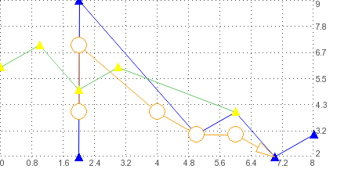
<?php
$graph = new graph();
$graph->addBulkPoints("0|2:2,0|3:5,0|9:2,1|4:4,1|7:2,1|3:5,2|5:2,2|6:3,2|4:6");
$graph->setBulkProps("1|endstyle:1,1|pointwidth:20,1|pointstyle:8,-1|pointstyle:3,-1|pointwidth:10");
$graph->setColor('color',1,'orange');
$graph->setColor('color',2,'green');
$graph->setColor('pointcolor',2,'yellow');
$graph->graph();
$graph->showGraph("exa8.png");
?>
|
28ms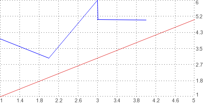
<?php
$graph = new graph();
$graph->importXML("testdata.xml","i","d","point",0);
$graph->importCSV("testdata.csv","d,i",1);
$graph->setColor('color',1,'red');
$graph->graph();
$graph->showGraph("exa11.png");
?>
|
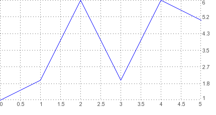
<img src="<?=graph::createGraph('RAW:1,2,6,2,6,5')?>">
|
26ms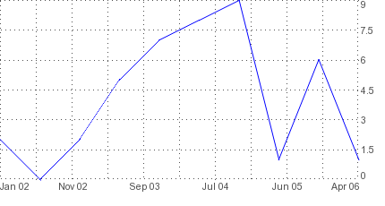
<?php
$graph = new graph();
$graph->demoData();
$graph->setProp('scale','date');
$graph->setProp('startdate','January 2002');
$graph->setProp('xincpts',5);
$graph->graph();
$graph->showGraph("exa9.png");
?>
|
55ms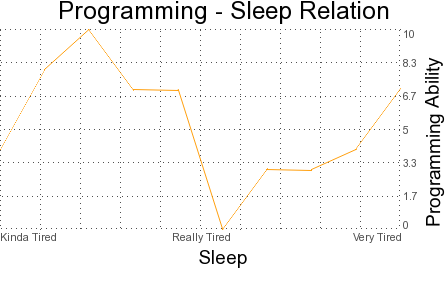
<?php
$graph = new graph();
$graph->demoData();
$graph->setColor('color',0,'orange');
$graph->setProp('title','Programming - Sleep Relation');
$graph->setProp('titlesize',18);
$graph->setProp('xlabel','Sleep');
$graph->setProp('ylabel','Programming Ability');
$graph->setProp('scale',array('Kinda Tired','Really Tired','Very Tired'));
$graph->graph();
$graph->showGraph("exa10.png");
?>
|
131ms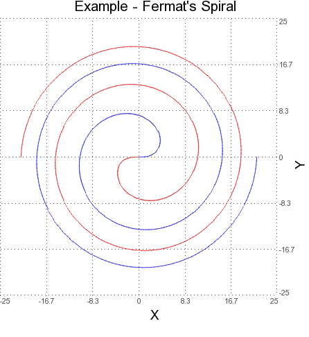
<?php
$graph = new graph(400,400);
$graph->importCSV("FermatSpiral_a.csv","i,d", 0);
$graph->importCSV("FermatSpiral_b.csv","i,d", 1);
$graph->setColor('color',0,'red');
$graph->setColor('color',1,'blue');
$graph->setBulkProps('xsclpts:6,xincpts:6,ysclpts:6,yincpts:6');
$graph->setProp('autosize',false);
$graph->setProp('sort',false);
$graph->yMin = -25;
$graph->yMax = 25;
$graph->xMin = -25;
$graph->xMax = 25;
$graph->setProp('title',"Example - Fermat's Spiral");
$graph->setProp('titlesize',16);
$graph->setProp('xlabel','X');
$graph->setProp('ylabel','Y');
$graph->graph();
$graph->showGraph("exa16.png");
?>
|
43ms
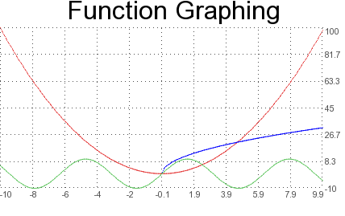
<?php
$graph = new graph();
$graph->setProp('funcinterval',.125);
$graph->setProp('benchmark',true);
$graph->graphFunction('x^2',-10,10);
$graph->graphFunction('10sqrt(x)',-10,10,1);
$graph->graphFunction('10sin(x)',-10,10,2);
$graph->setColor('',0,'red');
$graph->setProp('title',"Function Graphing");
$graph->setColor('',2,'green');
$graph->graph();
$graph->showGraph("exa17.png");
?>
|
|
This example outputs the graph as HTML layers, not using images
<
br>
IN THE HEAD OF THE DOCUMENT:
<?php
include("graph.oo.php");
$graph = new graph(400,200,6,10,"div","graphdiv");
?>
IN THE BODY:
<div id="graphdiv" style="position:absolute;left:200px"></div>
<?php
$graph->demoData();
$graph->graph();
$graph->showGraph();
?>
| The JavaScript generated by the left graph:
|